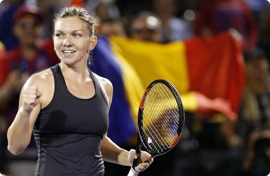

Como os atletas profissionais lidam com as doenças articulares?
Como parte da campanha internacional “Healthy Joints”,
entrevistamos atletas famosos cujas articulações são mais
suscetíveis a doenças. Perguntamos a eles como lidam com isso e
por que é perigoso.
Conor Anthony McGregor é um lutador irlandês de artes marciais
mistas, boxeador profissional, ex-campeão do UFC, participante
da campanha “Healthy Joints”.

8 de Março de 2020
Redação: Olá, Conor. Você está participando da campanha internacional “Healthy Joints”. Diga-nos qual é o seu envolvimento? E por que você precisa disso?
Conor: Olá. Verdade!. Nossa equipe técnica e eu participamos e apoiamos esta campanha. Realizamos conversas educacionais, treinamentos e aquecimentos para os atletas mais jovens. Compartilhamos nossa experiência para que evitem nossos erros. As artes marciais mistas são um esporte muito traumático. E os cotovelos, joelhos e articulações da coluna são os que mais sofrem, devido às cargas pesadas. Em geral, todos os esportes profissionais têm um efeito muito mau nas articulações, até os não profissionais, se não fizer certo. E preciso disso para que haja pessoas saudáveis no mundo, e não apenas atletas.
R: Conte-nos com mais detalhes por que as articulações sofrem e qual é a ameaça?
C: Via de regra, as razões são as tensões excessivas nas articulações, sob a influência das quais a camada cartilaginosa se desgasta rapidamente e se cobre de fissuras. As articulações são afetadas não apenas nos desportos profissionais, mas também na vida cotidiana. Um estilo de vida sedentário, ou vice-versa, muito ativo, com sobrepeso ou magreza, tabagismo e outros hábitos ruins. Tudo isso acabará afetando as articulações. De forma negligenciada, se você não zelar pela sua saúde, ou se esquecer dos problemas, tudo isso pode resultar em invalidez, amputação e até morte. E na luta tudo isso é acelerado e multiplicado por 1000. É por isso que nos juntamos às “Healthy Joints”.
R: Conte-nos resumidamente o que você aconselha nas suas palestras.
C: Primeiro: nunca negligencie um treino! Isso se aplica
não apenas aos atletas. Mesmo simples, mas correto! O exercício
pela manhã tem um efeito benéfico nas articulações.
Segundo:
Use proteção, joelheiras ou bandagens durante o treinamento
intenso.
Terceiro: pare imediatamente de se
exercitar se sentir dor nas articulações! Acredite em mim, é
melhor parar do que resolver as consequências depois.
Quarto:
mesmo se você estiver apenas a correr, primeiro aprenda a correr
corretamente! Ou seja, trabalhe com um mentor, um treinador,
pelo menos para começar, para não matar as suas articulações.
Quinto:
é claro que é alimentação. Os ácidos ômega são encontrados em
muitos lugares, portanto, diversifique sua dieta com eles.
Estes são os pilares mais básicos nos quais se baseia a saúde
das articulações.
R: Ao longo da sua carreira você teve lesões, por isso teve que cancelar lutas. Como essas lesões o afetaram? Você tem algum segredo especial de saúde para as articulações? Como você suportou?
C: (risos) Qualquer lesão faz mal às articulações. Até microtrauma. Tudo isso afetará mais tarde. Eu não tenho segredo eu tenho meio comprovado em que eu confio. Alivia perfeitamente a dor, o inchaço e acelera a recuperação.
R: É isso aí! Conte-nos mais sobre esse meio milagroso!
C: (risos) Não é uma cura milagrosa, é um ótimo trabalho de cientistas farmacêuticos. O pessoal fez uma grande quantidade de pesquisas e testes e alcançaram resultados surpreendentes. Existe algum tipo de composição super natural: canela, cânfora, hortelã. Não sou bom nisso, pra mim o principal é trabalhar! E me recomendou essa fórmula um médico, quando estava em Londres, e quase fui eliminado da competição devido a uma lesão. É bom que ele já conhecesse esta ferramenta. Você pode dizer que ele me salvou.
R: Bem, que tipo de medicamento é?
C: Flexio Assim é chamado, você pode pesquisar no Google sobre a composição e os ensaios clínicos. Você pode encontrar tudo sobre ele na Internet. E, é melhor eu dar a você o sítio onde podemos fazer pedidos para o nosso clube, caso contrário, há muitas falsificações na Internet... Ele se comprometeu. O medicamento é algo popular entre os atletas, e não só. Minha mãe também usa
R: E por fim, conte-nos como você alcançou tais alturas no esporte, o que mais você deseja alcançar. E deseje algo aos nossos leitores.
C: Humm, como cheguei lá ... É muito simples 80% trabalho árduo, 10% talento, 10% sorte. E, claro - mentores. E saúde! Quero muitas coisas, mas um dos principais objetivos é que os atletas sejam campeões sem comprometer a saúde. Por isso me inscrevi na campanha internacional “Healthy Joints”. Bem, quero desejar a todos nós saúde e felicidade. Obrigado.
R: E obrigado pela entrevista interessante, Conor. Novas conquistas para você e até logo.
C: Tchau! Cuide bem das suas articulações! (risos)
TOQUES NO MESMO SÍTIO !
Nossos editores decidiram não insistir em apenas um comentário sobre Flexio, e perguntou a outros atletas se eles sabiam sobre essa ferramenta, se a estavam a usar ou usavam outra ferramenta. Aqui estão alguns trechos de outras entrevistas.

Mutaz Essa Barshim é um saltador catariano, duas vezes medalhista olímpico, duas vezes campeão mundial, participante da ação internacional “Healthy Joints”.
(trechos da entrevista):
R: Sr. Barshim, que medicamentos para as articulações você usa? E você os usa? Para as cargas de exercícios não é suficiente massagem e aquecimento.
Barshim: Ooh, você quer abrir a caixa de Pandora? Naturalmente, tenho muita experiência com medicamentos, tanto para lesões como para curas, e simplesmente para manter a saúde. Há um medicamento, no qual confio absolutamente, por experiência, este é o remédio mais eficaz. Posso falar o o nome? (aceno com a cabeça para a redação). Então, é o Flexio . Meu massagista me recomendou.
Ao encomendar Flexio você vai receber um presente secreto no valor de 50 euros!
R: Surpreendente! Você não é o único a falar sobre o Flexio ... E até eu começar a preparar essa série de entrevistas, não sabia nada sobre esse medicamento.
Barshim: Aparentemente, você tem articulações saudáveis (risos). Cada atleta possui seu próprio kit de primeiros socorros. Pode ser diferente para cada pessoa. E se O medicamento é realmente bom, pode ser encontrado em muitos.
Simona Halep é uma tenista profissional romena, ex-primeira do mundo, vencedora de dois torneios Grand Slam, vencedora de 23 torneios WTA, participante da campanha internacional “Healthy Joints”.
(trechos da entrevista)
R: O que? Você até reduziu seus seios para salvar as articulações das costas? Incrível!
Simona: Que sacrifícios não tem que ir, pela causa do grande desporto. Eu já tinha problemas de coluna, então tive que tomar essas medidas.
R: Você sempre toma essas medidas drásticas ou tem outras maneiras de proteger sua saúde?
Simona: Qualquer uma, mesmo um ferimento leve, pode afetar a saúde. Manter as articulações saudáveis é a principal prioridade do tenista. Caso contrário, você pode esquecer os grandes desportos. Claro que tenho sistema de defesa e profilática.
R: Pode revelar-nos quais são as mais acessíveis?
Simona: Qualquer doença é melhor prevenir do que curar. Minhas lesões atrapalharam minha competição, então agora eu olho mais de perto minha saúde. Se tudo for sério, é melhor consultar um médico. e para prevenção, eu uso um medicamento especial . E claro que a alimentação também é muito importante.
R: Conte-nos sobre sua alimentação, por favor. O que costuma comer?
Simona: Eu como muito peixe, brócolis e outros alimentos com ácidos ômega e um medicamento Eu tomo (tira da bolsa, coloca na câmera - nota do editor).
R: Оh! É o Flexio! Eu já o conhecia!
Simona: Você vê...até você sabe. No momento é o melhor meio de defesa das articulações, alívio da dor e do inchaço.
Caros leitores, a próxima entrevista será com a atleta Érica Gomes, que também participa da ação internacional “Healthy Joints”. Ela falará sobre seu sucesso e compartilhará seus segredos de saúde. Até a próxima!
P.S. Nossa redação dá 100% de garantia para ESTE SÍTIO , onde você pode encomendar Flexio sem pagar a mais e sem medo de falsificação. Tenha saúde!